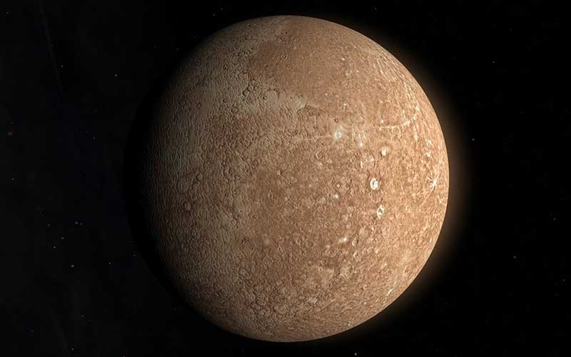

Merkür ismi, Güneş etrafında çok hızlı hareket ettiği için verilmiştir. Hızı ile bir yerden diğerine oldukça hızlı seyahat edebilen antik Roma haberci tanrı Merkür’ü gezegene oldukça benzettikleri için bu isim uygun görülmüştür. Merkür Gezegeninin Özellikleri Nelerdir? Yapılan gözlem ve araştırmalar sonucunda astronomların elde ettiği Merkür hakkında bilgiler arasında; uydusunun olmadığı, Güneş’ten yaklaşık 58 milyon kilometre uzaklıkta bulunduğu, çapının 4870 kilometre olduğu, Güneş etrafında yaklaşık saniyede 48 kilometrelik bir hızla döndüğü ve Dünya ile arasında 80 milyon kilometre mesafe olduğu bulunmaktadır. Merkür gezegeni kendi etrafında dönüşünü ise yaklaşık olarak 59 günde tamamlanmaktadır. Yani 1 Merkür yılı, 59 Dünya gününe eşittir. Gezegen Dünya’dan gözlemlendiğinde Ay’a benzer şekilde hilal, dördün ve dolunay şeklinde görünmektedir. Merkür Gezegeninin Yüzeyi Nasıldır? Merkür gezegeninin yüzeyi farklı özellikler barındırıyor olmakla beraber, Ay’ın yüzeyi ile benzer şekilde kraterlerle kaplıdır. Büyük kraterlerin arasında, gök taşlarının çarpmasından oluştuğu düşünülen küçük kraterler de mevcuttur. Ayrıca gezegenin yüzeyinde yüzlerce kilometre uzunluğunda yılan gibi kıvrımlı izler bulunmaktadır. Gezegenin kuzey bölgesinde ise 1300 kilometrelik ve 1 ile 2 kilometre yüksekliğinde değişen dağlarla çevrili bir havza da tespit edilmiştir. Güneş’e oldukça yakın bulunmanın dezavantajlarını, yüzeyini gözlemleyen herkes rahatlıkla gözlemleyebilir. Merkür yüzeyinde su buzu bulunan bölgelerin görüntüsü Merkür Gezegeninde Yaşam Var Mıdır? Merkür gezegeninde gezegeni koruyacak derecede bir atmosfer yoktur. Bu nedenle yapılan araştırmalara göre gündüz vakitlerinde sıcaklık 475 derecelere çıkmakta, geceleri ise bu sıcaklık değeri -175’e kadar düşmektedir. Bu koşullardan dolayı gezegende yaşam olamayacağı kabul edilmekle beraber, 1991 yılında elde edilen bilgiler ışığında, kutuplarında su birikintilerinin olabileceği tespit edilmiştir. Bu gezegende yaşam olsa dahi, Dünya’da şu ana kadar keşfedilen canlı formları arasında böylesine değişken bir ortamda yaşayabilecek canlı bulunmamaktadır.